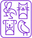

Keep different records connected
Health events, routines, reminders, and catalogs needed domain boundaries while staying part of one pet history.
See the access patterns
pettzi.Case study · Full-stack serverless on AWS
Pettzi is a concluded pet-care product; this case study shows how Javier Batres designed and built it across product, architecture, backend, frontend, and infrastructure.
Product concluded; the repository remains as a technical reference.
01 / PRODUCT REQUIREMENTS
A pet-care product asked for familiar experiences backed by clear boundaries, dependable jobs, and a data model built around real access patterns.
Health events, routines, reminders, and catalogs needed domain boundaries while staying part of one pet history.
See the access patternsOwners and co-owners need explicit relationships and roles to share a pet’s records responsibly.
Explore the Owners APIDue reminders need a scheduled processor that finds the right records and sends email without blocking an API request.
Read the event flowPhotos and documents need uploads through S3 while pet records retain references instead of large file payloads.
Explore the Uploads APIThe web experience supports English and Spanish across the product’s core screens.
Browse the Angular appAPI requests and scheduled jobs use managed serverless services, so the application has no continuously running compute host.
Review the architecture02 / HOW I WORK
API contracts define routes and schemas before handlers are wired, keeping implementation aligned with the published surface.
A single Nx workspace keeps each bounded context in its own API library and CDK stack while sharing domain utilities.
Handlers parse, validate, and delegate; domain libraries hold rules, key builders, and mapping logic.
The shared DynamoDB table uses explicit keys and indexes for the reads and writes documented by the domain.
AGENTS.md requires at least 80% coverage for touched files, with behavior-focused cases for the changes.
GitHub Actions runs CI and npm audit; Snyk scans dependencies, and Dependabot maintains dependency updates.
Repository guidance assigns agents implementation work while a human remains architect and final reviewer.
03 / SYSTEM ARCHITECTURE
A C4-inspired map of the deployed shape: eight domain APIs, shared compute and storage, delivery edges, and the operational stacks around them.
CloudFront and S3 deliver the Angular frontend; browser requests then use the API custom domain, one of eight HTTP APIs, Lambda handlers with shared SDK layers, and DynamoDB or S3. Cognito JWT authorization protects configured routes. Reminder schedules invoke a dispatcher Lambda, FIFO SQS, a consumer Lambda, and SES templates; MonitoringStack watches API, Lambda, and data services. AppRegistry stack classes are defined but are not wired into the current CDK entry point.
REQUEST + DATA PATH
Pettzi
Pettzi
Pettzi
Pettzi
Pettzi
Pettzi
ASYNC / EMAIL PATH
Pettzi
Pettzi
Pettzi
Pettzi
Pettzi
Pettzi
Pettzi
Pettzi
Pettzi
Pettzi
Pettzi
Pettzi
Pettzi
Each API is an API Gateway HTTP API; the custom domain maps its base path.
AuthApi · PetsApi · OwnersApi · EventsApi · RemindersApi ·
RoutinesApi · UploadsApi · CatalogsApi
Pettzi
Pettzi
Pettzi
Pettzi
Pettzi
Routines are request-driven in Pettzi
Pettzi
VIEW 01 / CONTEXT
VIEW 02 / CONTAINERS
VIEW 03 / REQUEST PATH
Some routes are intentionally public, including catalog reads and shared-record access.
VIEW 04 / ASYNC + EMAIL
18 CDK STACK DEFINITIONS / GROUPED BY CONCERN
Shared single-table DynamoDB, docs and log buckets, and infrastructure alarms.
Builds and publishes the four shared SDK Lambda layers.
Cognito User Pool and web app client.
Auth HTTP API, account handlers, and templated account email.
Pet profiles and shared-record API handlers.
Owner links, roles, invitations, and secret rotation.
Pet health events and timeline handlers.
Reminder handlers, schedules, FIFO queue, and email consumer.
Pet routines, activities, history, and occurrences.
Presigned file transfers and upload-triggered thumbnails.
Species, breeds, and vaccine catalog endpoints.
Private S3 SPA origin, CloudFront, WAF, certificate, and DNS alias.
Custom API edge, base-path mappings, certificate, and DNS alias.
Private S3 origin and CloudFront distribution for email assets.
SES identity (when configured) and bilingual message templates.
Service dashboards and API, Lambda, data, and email alarms.
Defines the AppRegistry application and metadata; not instantiated from main.ts.
Defines stack associations for AppRegistry; not instantiated from main.ts.
The count is the 18 *-stack.ts definitions in
apps/cdk/src. Frontend, API-domain, and email-assets CDN stacks
are conditional on domain configuration.
04 / NX WORKSPACE
Three apps, twelve libraries, and four Lambda layers share a toolchain; dependency arrows below reflect the Nx project graph and CDK handler paths.
Nx targets and root scripts coordinate project build, test, and lint tasks across the workspace.
Every API uses domain-model and utils-dynamo for shared types, mappers, key builders, and common DynamoDB helpers.
Root lint:affected and test:affected scripts use Nx affected; CI currently runs workspace lint and test targets with nx run-many.
Each of the eight API domains has a library, a CDK API stack, a mapped base path, and an OpenAPI contract.
The Nx graph has 3 apps and 12 libraries. This map does not imply
enforced module boundaries: eslint depConstraints currently allow
* to depend on *.
05 / FOLLOW AN ORDER
HEALTH EVENT
REMINDER
06 / ENGINEERING NOTES
Alternative: separate tables per domain. The shared table keeps documented access patterns together, at the cost of careful key and index planning.
Alternative: undocumented service coupling. Contracts make boundaries visible, with the cost of keeping each change aligned.
Alternative: an always-on server. Managed scaling reduces server operations, while the design follows provider limits.
Alternative: business rules in each handler. Shared domain code keeps handlers predictable, with an extra layer to navigate.
Alternative: check due reminders during API requests. Scheduled work keeps that processing separate, with asynchronous delivery.
Alternative: separate repositories. Nx shares workspace tooling, while bounded-context boundaries must stay explicit.
07 / QUALITY IS A FEATURE
Contracts, checks, and careful defaults support a system that handles personal care records.
08 / THE SOURCE MATERIAL
WHAT I DELIVER
Domain APIs on AWS Lambda, API Gateway, EventBridge, and SES.
Deployable AWS resources composed and managed with CDK.
Angular interfaces connected to documented API contracts.
Architecture documentation, CI checks, and maintainable domain boundaries.
A NOTE TO CLOSE
I design and build cloud-native systems end to end. Looking for someone to build it with you?